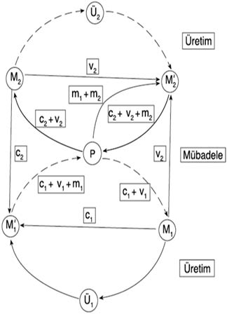

5

İKTİSADİ YENİDEN ÜRETİM

Bir önceki bölümde tek bir sanayi sermayesi devresi inceleniyordu. Bir bütün olarak sermaye söz konusu olduğunda, her biri kendi adımlarıyla hareket edip kendi hızıyla genişleyen çok sayıda farklı devre vardır ve bu devrelerin birbiriyle bütünleştirilmesi gerekir. Marx, bu süreçleri Kapital’in 2. cildinde, ekonomiyi iki geniş kesime ayırarak tahlil eder: üretim araçları (değişmez sermaye c ile satın alınan ÜA) üreten 1. kesim ve (işçiler tarafından değişir sermaye v ile, sermayeciler tarafından ise artık değer m ile satın alınan) tüketim araçları üreten 2. kesim. Bu bölümde, bir bütün olarak sermayenin yeniden üretim süreci inceleniyor. Sermaye birikiminin olmadığı basit yeniden üretimle başlayan bölüm, daha sonra, artık değerin bir parçasının yatırıldığı genişletilmiş yeniden üretimi inceliyor. Nihayet kapitalist ekonominin toplumsal yeniden üretimi üstünde duruyoruz.
Basit Yeniden Üretim
Şekil 5.1, basit yeniden üretim koşullarında 1. ve 2. kesimler arasındaki dengeyi bir akış diyagramıyla açıklıyor. İki devreyi P1 – M1 ... Ü1 ... M’1 – P’1 ve P2 – M2 ... Ü2 ... M’2 – P’2 (burada P’1 ve P’2 merkezî para havuzu P’ye massedilmektedir) ile gösteriyoruz. Şekil, işçiler ile sermayecilerin ücretleri v1 ve v2 ve artık değerleri m1 ve m2 ile 2. kesimden tüketim malları satın almaları, sermayecilerin ise 1. kesimden üretim araçları, c1 ve c2, satın almalarıyla oluşan meta akışlarını da gösteriyor (işçiler üretim aracı satın almazlar; tasarrufları ise yok sayıyoruz).

Şekil 5.1 İktisadi yeniden üretim
Teknik değişme yoksa ve sermayeciler, bütün artık değerlerini tüketime harcayıp sırf önceki üretim kalıbını yineliyorlarsa ekonomi, aynı faaliyet düzeyinde kendini yeniden üretebilir. Marx buna basit yeniden üretim adını verir. Bu, iki kesimin ürettiği değerler arasında belirli bir dengeyi içerir. 1. kesimin çıktı değeri c1 + v1 + m1, üretim aracı satışlarının değeri ise c1 + c2’dir. Öyleyse:
c1 + v1 + m1 = c1 + c2
Keza 2. kesim için çıktı değerleri ile tüketim aracı satışlarının değerinin eşitliği bize şu denklemi verir:
c2 + v2 + m2 = v1 + v2 + m1 + m2
Yukarıdaki her iki denklemi basitleştirirsek:
v1 + m1 = c2
Bu, Marx’ın basit yeniden üretimde iki kesim arasında denge için kurduğu ünlü denklemdir.
Genişletilmiş Yeniden Üretim
Ne var ki sermayeciler artık değerlerinin tümünü tüketmezler de bir parçasını ek üretim araçları satın almak için harcarlarsa sermaye birikimi yer almış olur. Bu durumda sermayecilerin bir sonraki dönem için üretim aracı alımları, c1 + v1 +m1, cari kullanım olan c1 + c2’yi aşar. Bundan şu sonuç çıkar ki genişletilmiş yeniden üretim için c1 + v1 + m1 >c1 + c2:
v1 + m1 > c2
Burada eşitsizliğin ölçüsü birikim oranına bağlıdır.
Bu yeniden üretim şemaları bir dizi farklı şekilde yorumlanmıştır. En yaygınlarından bir tanesi, ister statik (basit yeniden üretim durumunda) ister dinamik (genişletilmiş yeniden üretim) olsun Marksçı bir denge tahlili sundukları yolundadır. İkinci bir şık olarak, ana yolcu dengeli büyüme teorisi model alınarak (çoğu kez bilmeyerek) genişletilmiş yeniden üretim, sadece basit yeniden üretimin büyütülmüş bir biçimlemesi olarak görülür. Ekonomi, daha büyük olması dışında her bakımdan aynı görünür.
Bu yorumlardan hiçbiri Marx’ın kendi niyetlerinin ruhuna uygun değildir. Birinci olarak, Marx’ın metodolojisi, dengenin kapitalizm tahlili için örgütleyici bir kavram olarak kullanılmasına kesinlikle aykırıdır. İkinci olarak, Marx, yeniden üretim şemasında, bilinçli bir planın yokluğunda farklı üreticiler arasında mübadele alanı aracılığıyla kurulan eş güdümün karmakarışık oluşuna karşın, kapitalist sistem içerisinde gerek basit gerek genişletilmiş yeniden üretimin var olduğunu göstermek ister. O yüzden basit ve genişletilmiş yeniden üretimin, teorik açıdan olsun ampirik açıdan olsun birer alternatif olmasından çok, ilkinin ikincisi içerisinde var olması söz konusudur: Genişletilmiş yeniden üretim –hem derneşik değer büyüklükleri bakımından hem de birikimin sonucu olarak üretkenlik artışına konu olan metaların kendilerinin değerleri bakımından– kendisinin başlangıç noktası olan basit yeniden üretim koşullarına bağlıdır ve eş anlı olarak onlardan kopar. Üstelik Marx, genel denge teorisinde olduğu ya da laissez-faire yandaşlarının yaptıkları gibi, farklı üretici ve tüketicilerin piyasa aracılığıyla yüksek kaynak istihdamı düzeylerinde uyumlu bir şekilde eş güdümlendikleri sonucunu asla çıkarmaz. Onun yerine Marx’ın şeması, sermayenin yeniden üretimi ve birikiminin gerekli kıldığı iki ayrı dengeye işaret eder.
Birincisi, yukarıda gösterilmiş olduğu gibi değerler cinsindendir. İkincisi, gerek iki kesim içerisinde gerek bu kesimler arasında uygun miktarlarda emtianın üretilip birbiriyle mübadele edilmesi gerektiği için kullanım değerleri cinsindendir. Yukarıdaki şemaya göre, görüntülenen değer miktarlarının ilgili kullanım değerleriyle olan nicel ilişkisi belirsizdir. Varsayımsal bir alıştırmayla kesimlerden birindeki üretkenliği iki katına çıkarırken (bir başka deyişle, değerleri yarıya indirirken) öbüründekileri olduğu gibi bırakırsak bunu açıkça gösterebiliriz. Sonuç olarak, kullanım değeri dengesi aynı kalsa bile değer dengesi bozulur. Bu basit alıştırma, iki dengenin bir dereceye kadar birbirinden bağımsız olduğunu gösterir. Ne var ki birbirinden büsbütün bağımsız değillerdir. Örneğin üretkenlik değişmesi, eninde sonunda iki kesim arasında kaynak aktarımına yol açar. Bu, demin belirtilen iki denge arasında ekonomi çapında eş güdümün yanı sıra, büyüklükleri fiyat sistemince belirlenen tamamlayıcı para akışlarını işin içine katar.
Bu arada şekil 5.1’deki iktisadi yeniden üretim diyagramı, önceki bölümde tek sermaye devresi ışığında sergilenen (yanlış ya da kısmi) ekonomi görüşlerini pekiştirmekte kullanılabilir. Nitelikçe pek az şey eklenmiş olmakla birlikte şekil, iktisadi faaliyet düzeyini belirlediği düşünülebilecek etkenlerin hangileri olduğunu telkin eder. Bir kere, ana yolcu iktisat teorisi ve ideolojisinin merkezdeki mübadele faaliyeti “kutu”suna odaklanma eğilimi gösterdiğine, iki üretim alanının buna göre dışarıda göründüğüne dikkat edelim. Genellikle bu, neo-klasik üretim fonksiyonunda olduğu gibi, üretimin olmuş bitmiş gibi kabul edilebileceği ya da mübadele ilişkilerinin sorunsuz temelini oluşturan teknik bir ilişkiden ibaret olduğu yolundaki yanlış görüşü destekler.
Bunun en iyi göründüğü yer, mübadele ilişkilerinin, iktisadi kaynakların tam istihdamı düzeyinde arz ve talep eşitliğini güvence altına almaya yeterli sayıldığı neo-klasik genel denge teorisidir (ya da laissez-faire iktisadıdır). Kararlılık çözümlemesinde ise sorun, devreler içerisinde cisimlenmiş çeşitli miktarlar arasındaki orantısızlığın, arz ve talep fazlalarına tepki olarak meydana gelen fiyat hareketleri aracılığıyla kendi kendini düzeltip düzeltmediğidir.
Keynesyen teoride derneşik talebin rolü belirleyici hâle gelir. Yatırım çoğaltanına odaklandığımızda c1 + c2’nin düzeyi merkezî bir rol üstlenir. Tüketimin rolünü de içerirsek o zaman ulusal gelirden, v1 + v2 + m1 + m2’den, bu kaleme yapılan harcama da, önemli hâle gelir. Bu biçimiyle tüketim fonksiyonunun (gelirin ücretler ile kârlara ayrıldığı) Keynes sonrası ve Kaletskici derneşik talep belirleme yöntemleriyle daha çok benzerliği vardır. Ama önemli nokta şudur ki, bu açılardan bakıldığında ekonomi içerisindeki tikel bir harcama akışları kümesi derneşik iktisadi faaliyet düzeyini, belirleyici bir etki altında bırakır. Ne var ki Marx’ın terimleriyle artık değer üretimine ve bu temel iktisadi ilişki üzerindeki çatışmaya yer verilmez.
Daha karmaşık bir Keynes sonrası iktisat, paranın rolünü içerir. Bu açıdan bakıldığında iktisadi faaliyet düzeyini, merkezî havuz P’den boşalan para akışlarının büyüklüğü belirler. Bunları ister girişimcilerin çekingenliği yoluyla ister merkez bankasınca dayatılan daraltıcı para politikaları yoluyla sınırladınız mı ekonomi sendeler. Bankacılık sistemi ile faiz oranının rollerini 12. bölümde ayrı ayrı ele alıyoruz. Burada önemli olan, bu açıdan bakıldığında, işsizliğin kaynağının, ekonominin kârlılık üretme yeteneğinden neredeyse bağımsız olarak yetersiz mübadele faaliyetinde yattığını kaydetmektir. Keynes’in kendi teorisinde bu, geniş ölçüde, iş dünyasının kârlılığı konusundaki zayıf beklentilerin (ve faiz oranları konusunda yüksek beklentilerin) kendini gerçekleştiren birer kehanet olarak ortaya çıktığı kötümserlik dalgalarına bağlıdır. Daha genel olarak ve önemli ölçüde farklı şekillerde, ana yolcu iktisat teorisi içerisinde meydana gelen en son gelişmeler, (“akılcı” denilen) beklentilere, ekonominin yolunun belirlenmesinde epey geliştirilmiş bir rol vermektedir.
Nihayet daha radikal bir teori vardır ki, iktisadi faaliyet düzeyinin sermaye ile emek arasındaki bölüşüm ilişkilerince belirlendiği görüşünü savunur. Böyle bir görüş, ideolojik olarak hem sağ hem solla bağlantılıdır. İlki, kârlılığı yenilemek için işçi sendikalarının gücünün dizginlenmesi gerektiğini öne sürerken ikincisi, söz konusu çatışmaların kapitalizm sınırları içerisinde uzlaştırılamayacağını öne sürer. Tahlilî olarak bu görüş, ekonominin bir “sabit pasta” olarak anlaşılmasına bağlıdır. Buna göre ulusal gelir v1 + v2 + m1 + m2, iki sınıf arasında bölünür ve bunlardan biri ancak öteki aleyhine kazançlı çıkar. Örneğin v1 + v2 ile gösterilen ücretler fazla artarsa, m1 + m2 ile gösterilen kârlar azalmak zorundadır. Bu ise, hem biriktirme güdüsünü hem biriktirme yeteneğini zaafa uğratır.
Tersine görünüşlere karşın bu bakış, Marx’ın kapitalist ekonominin yapısı konusundaki kendi sunuşuna kesinlikle aykırıdır. Kârlılığın belirlenmesinde bölüşüme merkezî bir rol yüklenmesi, ancak, tahlilin mübadele arenası(nın bir kısmı) ile sınırlanmasıyla mümkündür. Bir kez üretim alanına da yer verildi mi bölüşüm ilişkilerinde ve ulusal gelirin içinden kârları ve ücretleri almakta sermaye ile emek arasındaki görünen bakışım buharlaşır; çünkü ücret ödemesi, önceden pazarlığı yapılabilecek bir “pasta parçası” olmaktan çok, üretim sürecinin başlaması için bir ön koşuldur (daha doğrusu bu, karşılığının fiilen ödenmesi pekâlâ daha sonra yapılabilecek olan emek gücü alımı için geçerlidir). Marx’a göre sermaye ile emek arasındaki bölüşüm ilişkileri, ceteris paribus ücretler düştüğünde kârlar yükselse (post-Keynesyenlerin yetersiz talepten hareketle başka bir görüş öne sürebilecek olmalarına karşın) bile “değişmez pasta” çeşidinden değildir. Kârlar, her şeyden önce, sermayecilerin üretim sürecinden artık değer sızdırma gücüne bağlıdır: Ücretler düzeyi ne olursa olsun, sermayecilerin emeği, o ücretleri üretmek için gerekli olan emek-zamandan daha fazla çalışmaya zorlamaları gerekir.
Artık değer üretimi konusundaki belirsizlik, sermayecilerin karşısına çıkan belirsizlik yönlerinden yalnızca bir tanesidir. Dört başka belirsizlik türü de geçerlidir. Birincisi, sermayeciler, artık değeri üretince, bunun ne kadarının gerçekleşebileceğini, çıktı nihayet satılıncaya kadar kesin olarak bilemezler. İkincisi, rekabet koşullarında artık değerin sızdırılması kapitalizm döneminde sürekli üretkenlik geliştirici teknik değişmeye yol açar. Ne var ki yukarıda gösterilmiş olduğu gibi teknik değişme, ekonomideki değer ve kullanım değeri dengelerini bozar (ve iş yerinde hasımca ilişkiler meydana gelmesine katkıda bulunabilir); böylece belirsizliği daha da artırır. Üçüncüsü, 12. bölümde gösterildiği gibi kredi, mali sistemin kaynaklarını bireysel sermayecilerin kullanımına sunarak, birikimin aşırı genişlemesini kolaylaştırır ve mali ve iktisadi bunalım koşullarını yaratır. Örneğin kredi, elverişli getirilerden eser yokken, bireysel sermayecileri yanıltıp onları olumlu bekleyişlere sevk edebileceği gibi, taze kredinin, vadesi gelen borçları ödemekte kullanılması hâlinde de, birikimin aşırı genişlemesi iktisadi bunalım koşullarını yaratabilir. Nihayet paranın kendisinin ticareti yapılır da, üretim ve ticaretle ancak gevşek bir bağlantı içinde olan bir para simsarları sınıfı yaratılırsa belirsizlik daha da büyür. Para ve parayla ilişkili mali belgeler ticareti, muhtemelen istikrar bozucu spekülasyon ve hileye yol açarak, bu tür faaliyetlerle doğrudan doğruya ilgili olmayanlar için bile daha çok belirsizlik yaratır.
Dolayısıyla bir yandan Marx’a göre mutlak ve göreli artık değer üretiminin bölüşüm ilişkilerini anlamanın can damarı olduğu, ancak bu ilişkilerin tek başına üretim koşullarından okunamayacağı sonucunu çıkarabiliriz. Öte yandan (esas olarak sınai ve mali sermayecilerin gelgeç heveslerinden türemek yerine) kapitalist üretim koşullarının yarattığı belirsizlik, artık değer üretiminin yanı sıra, bunalımın yaratılmasında da özsel bir rol oynar. Bunlar, birbirinden ayrılamaz.
Toplumsal Yeniden Üretim
Önceki alt bölümlerde, tek başına iktisadi sistemin içerisinden bakarak basit ve genişletilmiş yeniden üretime odaklanmıştık. Aslında bir can alıcı istisnayla sermaye devreleri, kendi kendine yeterliymiş gibi görünür. Çarpıcı istisna emek gücüdür; çünkü ancak, ücret malları karşılığı bu amaç için yeterli olduğu ölçüde devreler içerisinde yeniden üretilir. Ama bir kez iş günü bitince işçilerin özgür olmaları (ayrıca iş yerinde ve dışındaki direnişleri) yüzünden sermaye, yeniden üretim süreci üzerindeki denetimini eninde sonunda bırakmak zorunda kalır ki bir anlamda, toplumsal yeniden üretimin devreye girdiği yer burasıdır. Bu süreç, karmaşık bir iktisat dışı ilişkiler, süreçler, yapılar, güçler ve çatışmalar dizisini işin içine katar. Dar anlamda yorumlandığında toplumsal yeniden üretim, iş gücünün, gerek biyolojik olarak gerek uysal birer ücretli işçi olarak yeniden üretilmesi için zorunlu süreçleri içerir. Daha genel olarak toplumsal yeniden üretim, bir bütün olarak toplumun zaman içinde nasıl yeniden üretilip dönüştürüldüğüyle ilgilidir.
Kısacası ve büyük ölçüde yerinde olarak toplumsal yeniden üretim, bütün iktisat dışı etkenlerin içerisinde toplanacağı bir moda cümle ya da şemsiye hâline gelmiştir. Bu hâliyle soyut sermaye kategorisi ile ampirik kapitalizm gerçekliği arasındaki zeminin tümünü kapsar. Ama bu, toplumsal yeniden üretimin kapsam ve anlamının ancak kısmi bir anlaşılışıdır. Kapitalizmin gerek iktisadi gerek toplumsal yeniden üretimin doyurucu olmasına bağlı olduğu, iktisadi yeniden üretimin, ayrı ve bağımsız olmaktan çok bunun bir parçası olduğu açıktır. Bu ikisi arasındaki ilişkinin, iktisadi ve toplumsal yeniden üretim iş ve ev gibi birbirinden ayrıymışçasına algılanması yanlışı yaygındır. Büyük ölçüde, iktisadi olan ile toplumsal olanın (ikincisi siyaset, kültür ya da herhangi bir şey olmak üzere) uygunsuz bir şekilde yan yana konması, en çok toplumsal bilimler arasındaki disiplin sınırlarında belirgindir.
Toplumsal, giderek artan bir ölçüde de iktisadi yeniden üretimin en önemli yerlerinden biri devlettir. Devlet aracılığıyla, iktisadi yeniden üretim ilişkilerinden ayrı olan, ama onlardan bağımsız olmayan siyasi ilişkiler, yapılar ve çatışmalar kurulur ve dile getirilir. Devletin ne ölçüde ekonomiye bağlı olduğu son derece tartışmalı olup bu tartışma, uygunsuz tek boyutlu terimlerle ifade edecek olursak, devletin iktisadi, özellikle kapitalist buyruklara indirgenebileceğini öne sürenlerden, devleti, ekonomiden özerk olarak görenlere kadar uzanır. Kapitalist devletin niteliğini 14. bölümde ele alacağız; ama buradaki, bir yanda indirgemecilik, öbür yanda ise özerklik diye adlandırılan sorunların daha genel metodolojik, teorik ve ampirik anlamlılıkları vardır. Önemli olan nokta, hem kapitalist ekonominin iktisat dışı (ne tür bir devlet, eşya hukuku, töre, siyaset ve benzerinin hüküm sürdüğü) için nedensel anlamlılığını hem de bunların kendilerinin, iktisadi olanca koşullanan, ama belirlenmeyen etkiler altında biçimlendiğini tanımaktır.
Elbette benzer düşünceler, devletin dolaysız yörüngesi dışında kalıp da, çoğu kez “sivil toplum” diye söz edilen toplumsal yeniden üretim alanları için geçerlidir. Toplumsal yeniden üretim, hane halkı ya da aile sistemine ve özel faaliyetin daha genel alanlarına, o arada işçi sınıfının tüketimine ve günlük olarak işe gelmesini özendirip mümkün kılan başka faaliyetlerine de bağlıdır. Buraya kadarki vurgu, emeğin toplumsal yeniden üretimi üzerindeydi; ama iktisadi yeniden üretim, bir bütün olarak sermaye devrelerinin yeniden üretilmesini mümkün kılan koşulların –o arada yasaları, düzenlemeleri ve benzerini gerektiren piyasanın, para ve kredi sistemlerinin– biçimlenme ve dönüşümüne eşit derecede bağımlıdır. Bunlar, bazı sermayecilerin çıkarlarını ötekiler aleyhine kayırırlarken, sermayeciler arasındaki rekabetin haddinden fazla yıkıcı olmasını önler. Bu tür sorunlar, aynı zamanda siyaset, devlet ve sivil toplumun konusudur. Soyut bir düzeyde, iktisadi ve toplumsal yeniden üretimin birbiriyle ilişki içinde yapılaşma şeklinin yanında, yalnızca iktisadi yeniden üretim için zorunlu olan ve onun uyardığı koşullar belirlenebilir. Sermaye birikiminin toplumsal uyumu nasıl sağlanmakta, üzerindeki çatışma nasıl yürütülmekte ve genel olarak nasıl yönetilip çevrelenmektedir? Bu kadarının ilerisine geçmek için, tartışmaya bir ölçüde tarihî özgüllüğün dâhil edilmesi zorunludur ki bu görev elinizdeki metnin kapsamının ötesindedir.
Tartışma Konuları ve Tamamlayıcı Okuma Önerileri
Önceki bölümde öne sürülmüş olduğu gibi Marx’ın Kapital’in 2. cildindeki tahlili ihmal edilmiş, dolayısıyla tartışmanın görece uzağında kalmıştır. Aynı şeyi toplumsal yeniden üretim için söyleyemeyiz. Bu sorun gerek Marksistler ile Marksist olmayanlar arasında gerek Marksizm içerisinde yoğun bir tartışmanın konusu olmuştur. Anlaşmazlık, iktisadi olan ile iktisat dışı arasındaki ilişkiyi (ve bunların birbirine nasıl bağlı olduğunu ya da olmadığını) ve devlet ve siyasetin özerkliğinin niteliğinden “sivil toplum”un rolüne kadar iktisat dışının kendisinin farklı yönlerini kapsar.
Bu bölüm, Karl Marx (2006a, 3. kısım)’ta kapsanan malzemeye odaklanıyor. Yukarıda geliştirilen toplumsal yeniden üretim yorumu, Ben Fine (1992b), Ben Fine ve Ellen Leopold (1993) ve Ben Fine, Michael Heasman ve Judith Wright (1996)’a dayanıyor; ayrıca bk. John Weeks (1983). Emek gücü değeri ve işçi sınıfının yeniden üretimi, Ben Fine (1998, 2002, 2007) ve Alfredo Saad-Filho (2006, Böl. 4) tarafından irdeleniyor; ayrıca bk. Kenneth Lapides (1998) ve Michael Lebowitz (2006).